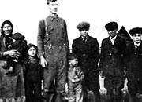
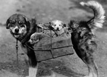
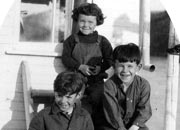
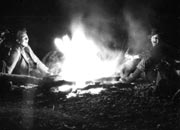
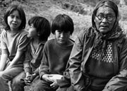
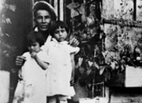
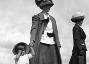

Dans les petites agglomérations reculées où le climat est difficile et le terrain inhospitalier, les relations interpersonnelles sont importantes. Les gens comptent les uns sur les autres. Ils comptent sur leur famille et établissent des liens étroits avec leurs voisins et les membres de leur communauté.
Traditionnellement, les Autochtones vivaient en petits groupes familiaux. Chaque année, ils parcouraient de grandes distances, se joignant parfois à d’autres groupes pour pêcher et chasser. Les relations familiales étaient vitales. Les enfants apprenaient des parents, des grands-parents et d’autres membres de la famille. Les enfants et les adultes s’entraidaient dans les tâches quotidiennes.
La ruée vers l’or a amené des milliers de personnes dans le Nord et, dans de nombreux cas, loin de leurs familles. Les nouveaux venus ont fondé des familles et tissé de nouveaux liens dans leur chez-eux. Les femmes venues dans le Nord à titre d’enseignantes et d’infirmières se sont mariées à des hommes qu’elles ont rencontrés ici; certains mineurs ont convolé avec des femmes des Premières nations; les femmes et les hommes célibataires ont trouvé des amis et des liens quasifamiliaux dans les agglomérations du Yukon.
On tenait des cérémonies pour souligner les périodes de transition de la vie : naissance, puberté, mariage et décès. Les membres de familles et les amis prenaient soin les uns des autres lorsqu’ils étaient malades et travaillaient ensemble pour élever la prochaine génération.
Généalogie
Les Archives du Yukon possèdent de nombreuses ressources pour ceux qui entreprennent des recherches généalogiques, dont des données sur des mines, des répertoires toponymiques, des listes de professionnels, des données sur les églises, des listes électorales, des enregistrements sonores des Premières nations et d’autres sources d’information.
«C’est pourquoi il est très important de soutenir, de respecter nos jeunes et de partager avec eux. Nous avons besoin d’eux et ils ont besoin de nous.»
John Joe Kaye Recollections
Passer au tableau L’endroit est béniRelations interpersonnelles et familiales
(Ci-dessus) Mme Porter, Mary MacBride et Larry Porter sur la 1re Avenue, à Whitehorse (1926).
AY, collection de la famille MacBride, 82/342 nº 61
Eliza et Ira van Bibber et dix de leurs enfants (sans date).
AY, collection Menzies nº 8699
Famille de chiens (vers 1943).
AY, collection Karman, 92/32 nº 3
Thomas, Mary Alice et William Drury, enfants de William et Lucy à bord du Thistle (juillet 1927).
AY, collection Tidd nº 8407
René (Loulier), Bill Hare, Ted Sunderland et Irvin Ray à leur campement à l’embouchure de la rivière Mayo (5 octobre 1923).
AY, collection Hare nº 6692
Sophie Isaac et ses arrières petits-enfants : Debbie, Walter et Jimmy Workman (vers 1970).
AY, collection Harrington, 79/27 nº 155
Jimmy Woods et ses nièces Mary (Roberts) Bergman et Sarah (Roberts) DeWolfe, à sa maison à Moosehide (sans date).
AY, collection Kates nº 5787
Dorothy Phelps, Hanna Livingston-Phelps et madame MacPherson (vers 1912).
AY, collection Scott/Phelps, 89/31 nº 16